Wizard For Rate Management: cómo procesar miles de tarifas en tres sencillos pasos
Diseño de un wizard para gestionar de forma masiva las tarifas de compraventa entre transportistas y shippers, sobre bases de datos de millones de registros.
Rol
Product Designer
Cliente
Transportistas
Año
2024
Equipo
Product Managers, Developers, QA
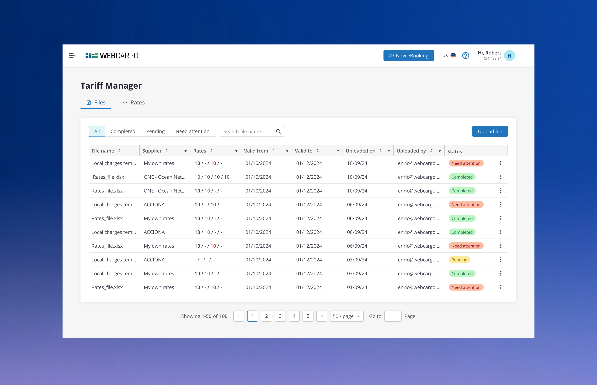
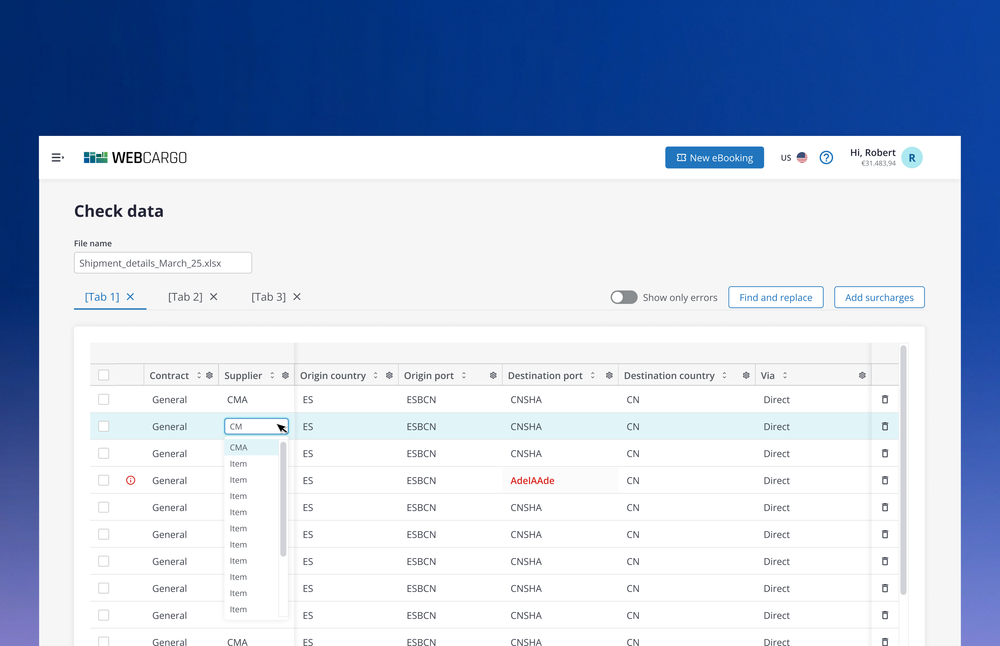
Por qué necesitábamos un nuevo enfoque
Contexto
Los equipos de operaciones gestionaban las tarifas de compraventa entre transportistas y shippers a través de archivos de Excel de millones de filas, sin validación automática ni trazabilidad de los cambios. Cualquier actualización masiva de tarifas era un proceso manual, lento y arriesgado.
Errores silenciosos
Un error de tipeo en una celda podía afectar a miles de tarifas sin que nadie lo notara hasta más tarde.
Sin trazabilidad
No había forma de saber quién había cambiado una tarifa concreta, ni cuándo, ni por qué.
Procesos manuales
Cargar y validar un archivo de tarifas podía llevar horas de trabajo manual y repetitivo.
Cómo investigamos antes de diseñar el wizard
Técnicas de investigación
Debido a la urgencia que tenía la compañía en arreglar este proceso, ya que estaba dando muchos errores tanto a nivel interno como a nivel de nuestros clientes, las técnicas de investigación previas antes de llegar al concepto final fueron casi nulas. Básicamente lo que se hizo fue un refresh de la interfaz de usuario y se añadieron algunas funcionalidades nuevas en comparación a la UI anterior.
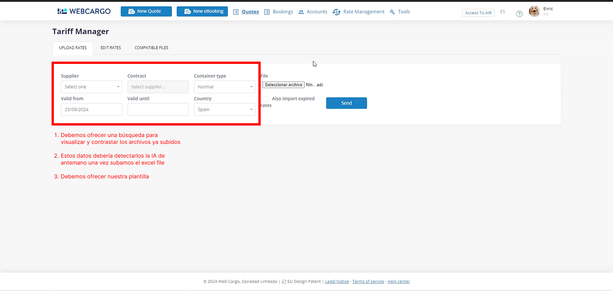
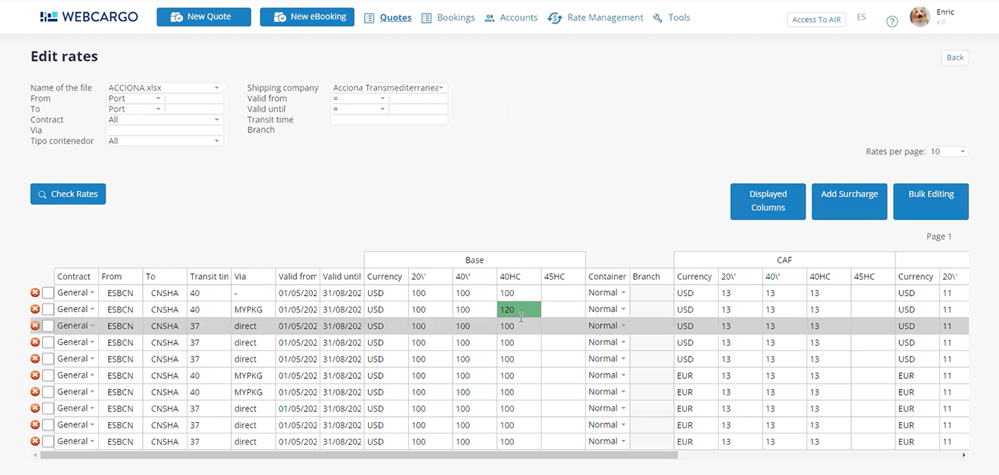
Captura de pantalla con sus correspondientes anotaciones sobre la interfaz que estaba implementada en ese momento.
De los primeros bocetos a las primeras interacciones
Enfoque
Para llevar a cabo este proyecto se tuvo en cuenta referencias de proyectos anteriores en los que tuve la oportunidad de trabajar, tanto a nivel de user experience como a nivel de user interface.
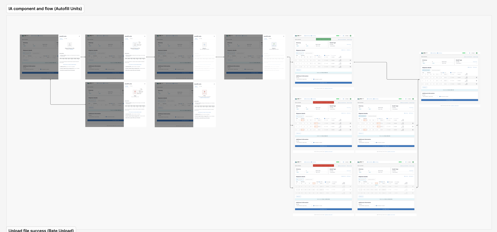
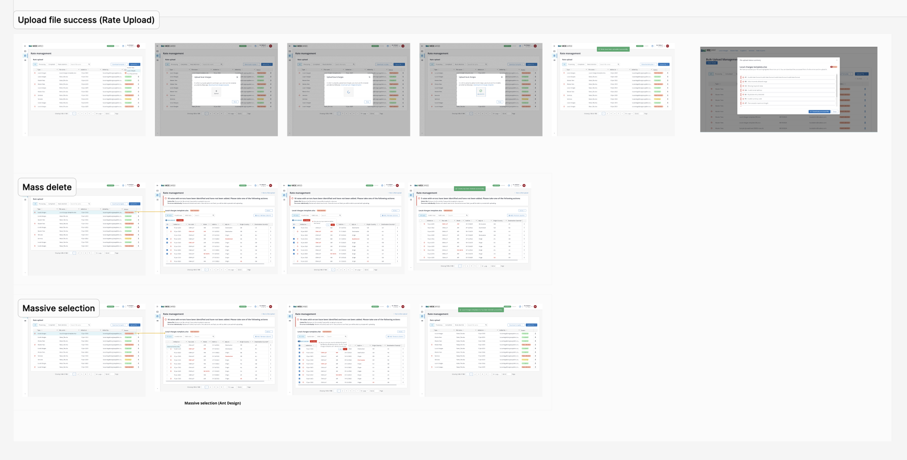
Referencias de proyectos anteriores utilizadas como punto de partida del flujo y la interfaz.
Carga de archivos
Landing page de archivos
Una página donde se podían ver todas las tarifas y archivos que se habían subido al sistema. Si no existía ninguno, aparecía un empty state.
Subida del archivo
Dos formas de subirlo: haciendo clic en el botón de subir archivos, o arrastrándolo directamente a la pantalla.
Procesamiento en segundo plano
Al ser una fase beta, la carga era algo más lenta de lo habitual: el archivo se procesaba mientras el usuario seguía trabajando en otras páginas, y una notificación push avisaba cuando terminaba y había que revisarlo.
Revisión con IA
En la página de revisión se visualizaba todo el contenido subido, y la IA identificaba errores o posibles confusiones al introducir los datos en el Excel — uno de los primeros proyectos donde empezamos a implementar IA, detectando errores mientras el archivo aún se estaba procesando.
Confirmación
Una vez revisados los errores, se completaba la subida y el archivo quedaba añadido correctamente al sistema.
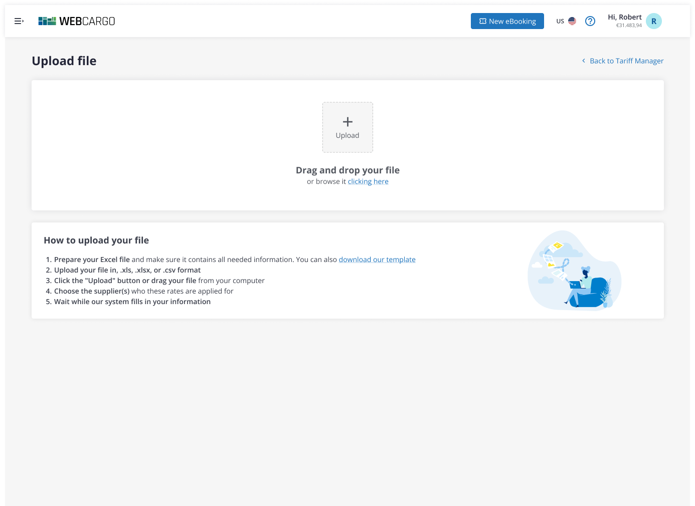
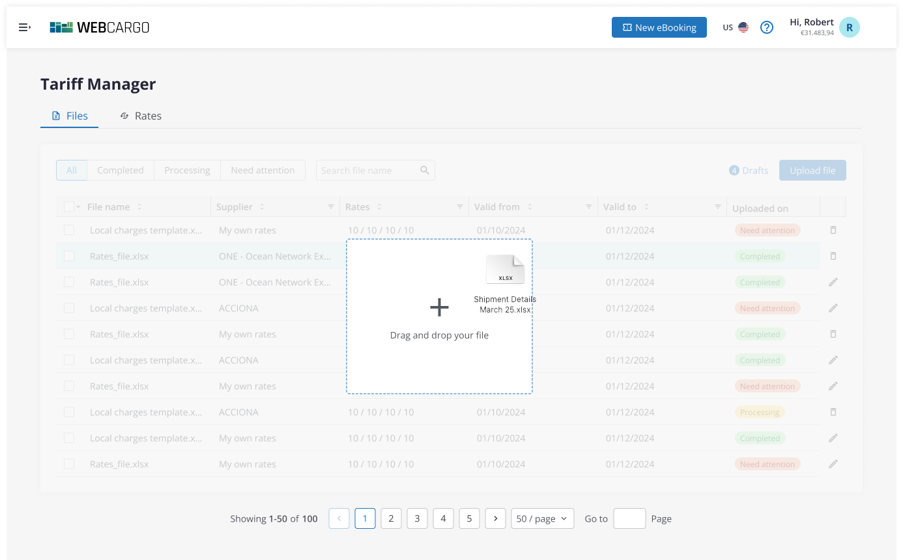
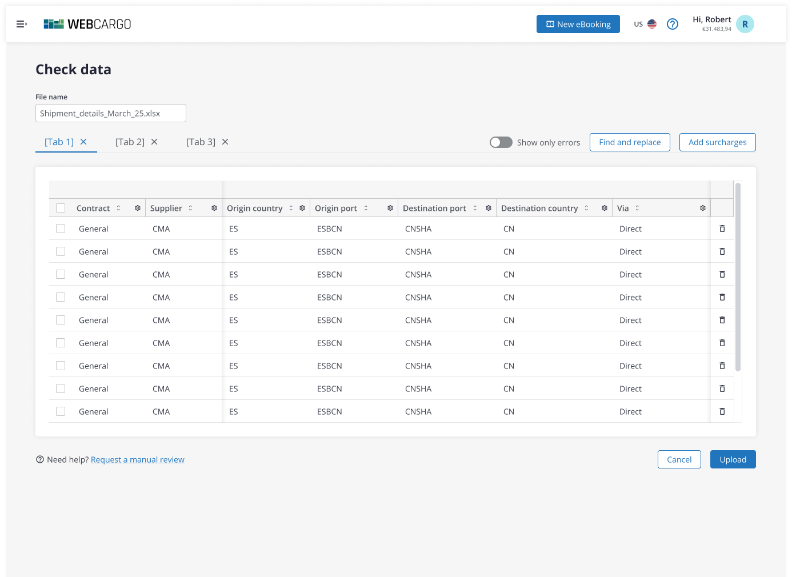
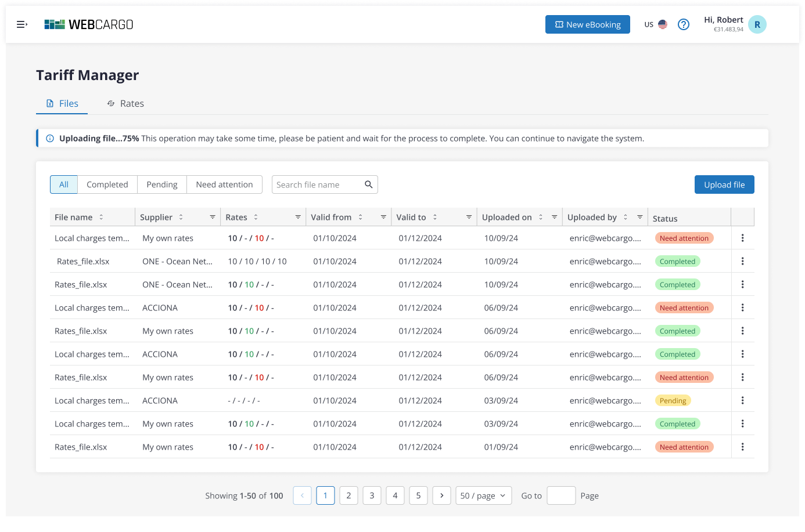
Capturas del flujo de carga de archivos: desde la subida hasta la confirmación de que el archivo se ha añadido correctamente.
Flujo de trabajo y validación con el equipo técnico
A medida que íbamos desarrollando las diferentes funcionalidades y procesos de la subida de archivos, recibíamos feedback constante — por no decir diario — del equipo técnico, que validaba las propuestas del equipo de diseño de producto. Muchas veces había cosas que se podían realizar y otras que no, y teníamos que adaptarnos a las condiciones técnicas limitadas que ofrecía la empresa en ese momento.
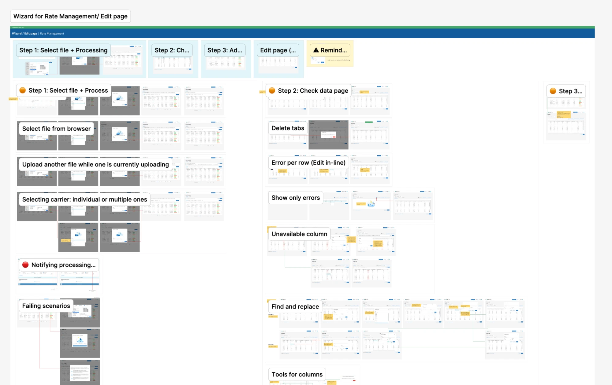
Mapa del flujo completo del wizard, con los distintos escenarios y validaciones que se fueron acordando con el equipo técnico.
Un wizard guiado = mil dolores de cabeza menos
Enfoque
En vez de seguir dependiendo de archivos de Excel sueltos, diseñamos un wizard paso a paso que guía al usuario desde la carga del archivo hasta la validación y confirmación de los cambios, detectando errores automáticamente antes de que lleguen a producción. A pesar de no haber podido testear la propuesta con usuarios reales, el resultado fue bastante óptimo: nuestros transportistas quedaron conformes con la nueva funcionalidad y destacaron que la interfaz se veía mucho más limpia, y que el proceso podía ser más íntimo entre el usuario y la plataforma, en vez de tener que pasar por una revisión del soporte interno de la empresa.
Funcionalidades
entregadas
-
01
Rediseño completo a nivel de precio, usuario e interfaz
No tenía nada que ver con la versión anterior: se reformula toda la interfaz y las diferentes funcionalidades del sistema para garantizar que el proceso de subida de archivos sea el elemento central a nivel visual.
-
02
Validación automática
El sistema detecta errores e inconsistencias antes de aplicar los cambios gracias a la inteligencia artificial, evitando errores a posteriori y garantizando un resultado mejor que el que estábamos acostumbrados. Este fue uno de los primeros proyectos en los que empezamos a utilizar la IA.
-
03
Menos carga de trabajo a nivel interno
Los equipos internos de la empresa se descargaron de bastante trabajo y pudieron enfocarse en la mejora de otras funcionalidades.
Resultados
- El proceso de subida de tarifas y archivos de grandes dimensiones se hizo muchísimo más ágil.
- El usuario ganó mayor autonomía y control sobre sus propias tarifas.
- Conseguimos nuevos clientes gracias a esta nueva funcionalidad: otras empresas que ya contaban con un sistema similar decidieron unirse a nosotros al ver que también lo teníamos.
+1M
Filas procesadas
Cada uno de los archivos contenía aproximadamente más de 5.000 líneas, y trabajamos con más de 50 transportistas en aquel momento.
90%
Errores detectados antes de producción
Se automatiza todo el proceso de subida e interpretación de las tarifas, garantizando el mínimo error posible.
"La agilidad con la que puedo procesar miles de tarifas en un momento es increíble."
CMA CGM
Transportista
Qué me dejó este proyecto
Este proyecto me permitió visualizar una nueva rama del diseño de producto: la de trabajar con funcionalidades que manejan archivos muy pesados, con muchísimos datos y cargas de información constantes. Esto me dejó como resultado una habilidad más a nivel personal y profesional como Product Designer: la de poder simplificar incluso los procesos de experiencia de usuario más complejos del mercado.
Has llegado al final
¿Quieres ver más proyectos?